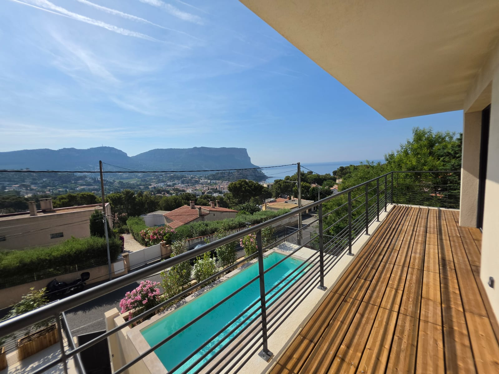
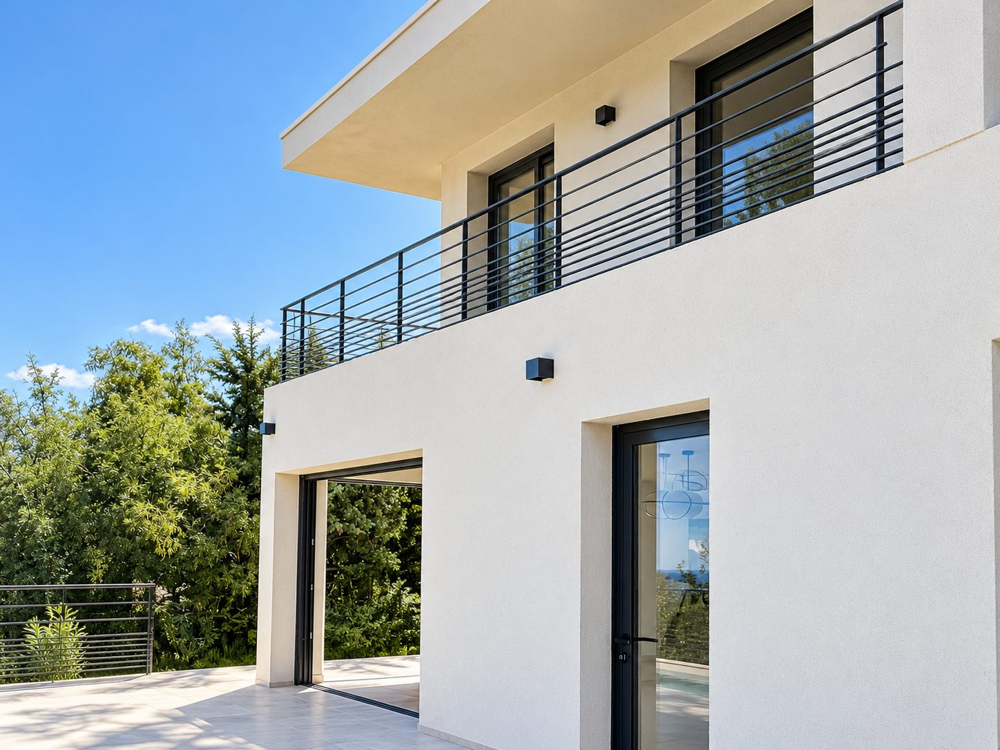
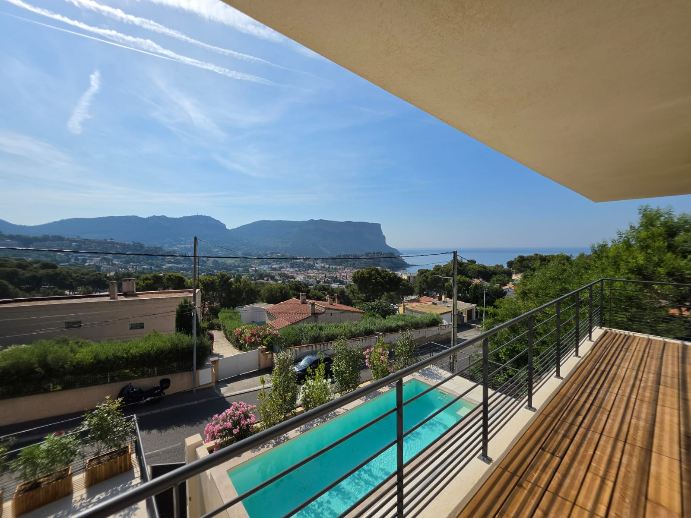

Immobilier d'exception
Immobilier d'exception
Villa
Verdun
Villa contemporaine entièrement restructurée, avenue de Verdun. 145 m² de prestations premium sur plus de 600 m² de terrain paysagé, face à la mer et au Cap Canaille.
Face à la mer,
le Cap Canaille.
Il y a des vues qui dispensent de tout commentaire. Celle-ci est de celles-là : depuis l'avenue de Verdun, le regard file par-dessus les pins jusqu'à la mer et la falaise rouge du Cap Canaille, la plus haute de France à tomber dans la Méditerranée.
La villa a été entièrement restructurée pour lui répondre : de grandes baies, des terrasses à chaque niveau, une piscine dans le prolongement de la pièce de vie. Cent quarante-cinq mètres carrés de prestations premium, et un studio indépendant pour recevoir.

Le bien en chiffres.
Ce que la villa offre, en un coup d'œil. Le détail des surfaces et des prestations figure page 14.


Cinquante mètres carrés
ouverts sur la mer.
Au cœur de la maison, la pièce de vie réunit salon, salle à manger et cuisine ouverte sur 50 m². Ses baies vitrées à galandage s'effacent entièrement dans les murs : la terrasse, la piscine et le jardin deviennent la suite naturelle de la pièce.
Quand les baies
s'effacent.

Baies ouvertes, la pièce de vie devient terrasse. Le sol file sans ressaut jusqu'à la piscine ; le jardin commence juste après. Un dedans-dehors saisissant, face à la mer.
- 50 m² de pièce de vie
- Cuisine ouverte
- Baies vitrées à galandage
- Terrasse dans le prolongement
- Piscine en accès direct
- Jardin en accès direct
- Vue mer et Cap Canaille
Une pièce qui s'adapte,
une chambre à part.
Le rez-de-chaussée propose deux espaces complémentaires. Attenante à la pièce de vie, une pièce entièrement modulable. Un peu plus loin, une chambre de plain-pied avec sa salle de bains et ses WC privatifs, à l'abri de la chaleur et du bruit : parfaite pour recevoir en toute autonomie.

Deux chambres,
face à la mer.
À l'étage, une suite parentale de près de 20 m² et une chambre de 15 m², chacune avec sa salle de bains privative. Les baies d'angle de la suite ouvrent sur la terrasse, la mer et le Cap Canaille : on se réveille face au paysage.


Quatre salles de bains,
dont une avec vue.
La chambre de plain-pied, la suite parentale et la chambre de l'étage ont chacune leur salle de bains privative. Dans celle de la suite, vasques en pierre, faïence couleur travertin et suspensions en rotin ; et depuis la douche à l'italienne, une fenêtre sur la mer.



La terrasse,
et la mer.
Une terrasse en bois court le long de l'étage, au-dessus de la piscine. C'est de là que la vue porte le plus loin : la mer, la baie de Cassis et la falaise du Cap Canaille, par-dessus les pins.
Dehors,
tout le Sud.
Plus de six cents mètres carrés de terrain paysagé : pelouse, pins, olivier et massifs fleuris, entretenus par un arrosage automatique. La piscine prolonge la terrasse de plain-pied avec la pièce de vie, face à la mer.

Cassis,
à chaque saison.
Un port de pêche devenu port de plaisance, un vignoble classé en AOC depuis 1936, et le parc national des Calanques pour jardin. Depuis l'avenue de Verdun, le port n'est qu'à quelques minutes.
- Le village rendu à ses habitants
- Randonnée dans les calanques
- Tables au coin du feu
- Les calanques avant la foule
- Sentier du littoral
- Terrasses au soleil
- Baignade à la Grande Mer
- Bateau vers Port-Pin et En-Vau
- Dîner sur le port
- Vendanges du vignoble cassidain
- Mer encore chaude
- Lumière rasante sur le Cap


- Port et marchéQuelques minutes
- Commerces et plageQuelques minutes
- MarseilleEnviron 30 min
- AéroportEnviron 45 min


Un studio,
et tout le confort.
Un studio indépendant de 20 m², avec son accès privatif, complète l'ensemble. Et tout ce qui fait le confort au quotidien est déjà là.
- Restructurer ou ouvrir la maison
- Créer les salles de bains
- Installer une climatisation
- Construire une piscine
- Aménager et arroser le jardin
- Créer un espace d'accueil indépendant


Une vue
exceptionnelle.
De la pièce de vie, de la piscine, de la suite ou de la terrasse de l'étage : partout, le regard trouve la mer et le Cap Canaille. Un paysage qui change à chaque heure, de la lumière rasante du matin à la falaise rougie du soir.



Les détails
qui comptent.
- Habitable145 m²
- TerrainPlus de 600 m²
- Pièce de vie50 m²
- Studio20 m²
- Chambres4, dont 1 modulable
- Salles de bains4
- WC3
- Suite parentalePrès de 20 m²
- CuisineOuverte
- BaiesÀ galandage
- ClimatisationGainable réversible
- Chambre de plain-piedSdB et WC privatifs
- JardinPaysagé, arrosage auto.
- PiscineAccès direct
- TerrassesRez-de-chaussée et étage
- VueMer et Cap Canaille
- StudioIndépendant, accès privatif
- GarageFermé
- StationnementPlaces extérieures
- CaveOui
- Prix1 590 000 €
- HonorairesInclus (FAI)
- DPECommuniqué sur demande
- Taxe foncièreCommuniquée sur demande
Surfaces indiquées par le vendeur, sous réserve de mesurage. Informations non contractuelles, susceptibles d'évoluer jusqu'à la signature.
Une question ? Écrivez-nousLe prix.


Quatre étapes,
sans pression.
- 01La brochureVous avez ce dossier entre les mains. Prestations, photographies et prix y figurent.
- 02L'échangeUn appel d'une quinzaine de minutes. Vos questions, votre projet, votre calendrier, et notre avis franc sur l'adéquation.
- 03La visiteSur place ou en visioconférence, à votre rythme. Nous vous laissons le temps de revenir une seconde fois.
- 04L'acquisitionOffre, compromis, financement, notaire. Nous restons à vos côtés jusqu'à la remise des clés.
Écrivez-nous sur WhatsApp : nous répondons sous vingt-quatre heures ouvrées, sans engagement de votre part.
- Le bienVilla Verdun
- CommuneCassis (13260)
- Prix de vente1 590 000 € FAI
- Délai de réponse24 heures ouvrées
Document et photographies non contractuels.
Vues de Cassis : Chabe01, kallerna et Jean-Christophe Benoist, via Wikimedia Commons
(CC BY-SA 4.0 et CC BY 3.0), recadrées.
© 2026 Prodigio · Tous droits réservés.